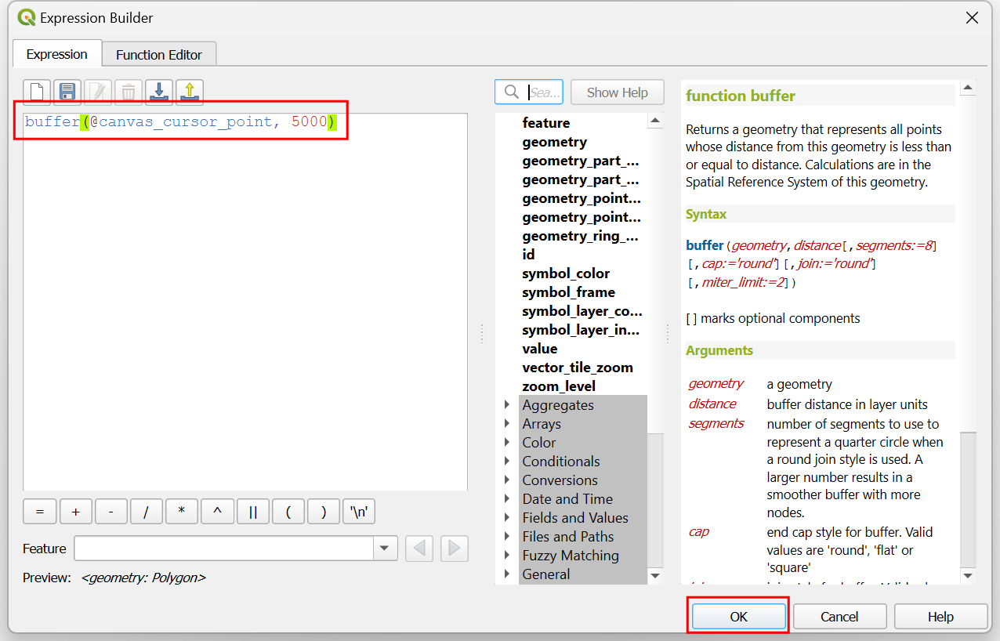
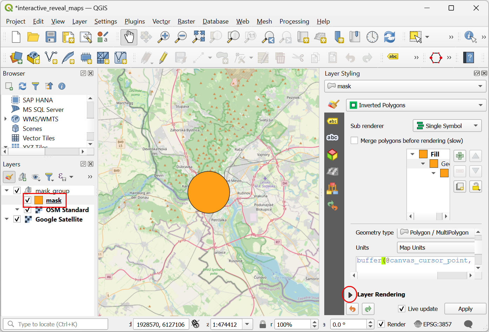
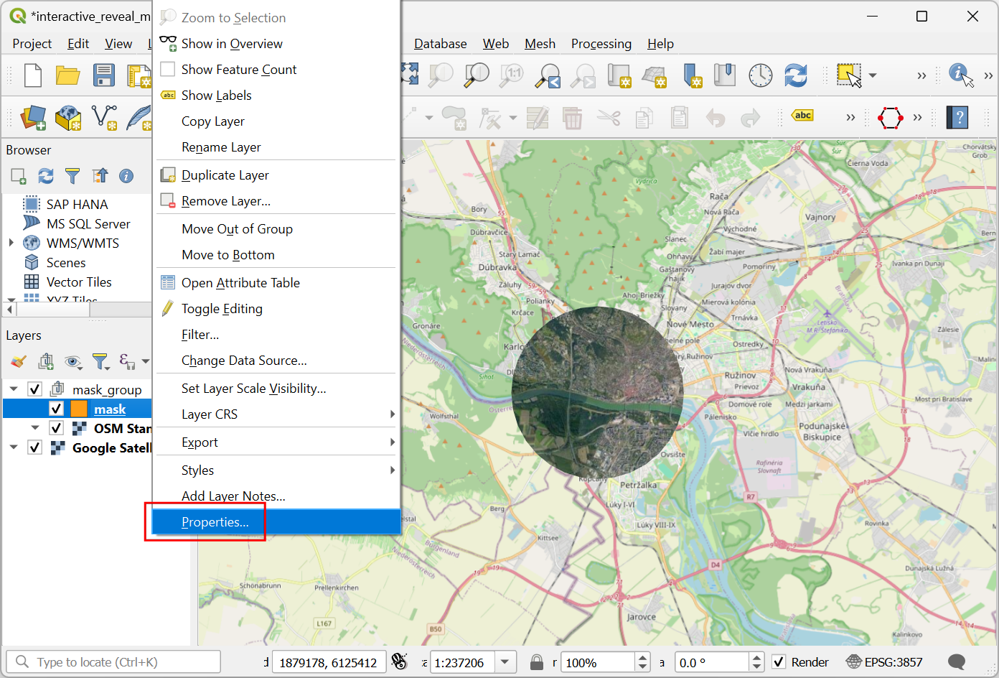

Ujaval Gandhi
Ujaval GandhiEen interactieve onthullende kaart maken (QGIS3)¶
Deze handleiding laat zien hoe een dynamische maskeerlaag te gebruiken in een groep met lagen, samen met expressies om een interactieve kaart te maken die de lagen onder de huidige laag onthult als u uw cursor verplaatst. Dit wordt gedaan met de nieuwe modi voor samenvoegen van masker in QGIS, naast de techniek voor het toevoegen van interactie, die is weergegeven in de vorige handleiding in Een interactief kaartvenster maken (QGIS3).
Deze handleiding is geïnspireerd op Hamish Campbell die deze interactieve visualisatie deelde op LinkedIn.
Overzicht van de taak¶
We zullen 2 raster tegellagen laden en een maskerlaag gebruiken met symbologie van de geometriegenerator om de onderliggende laag te laten zien als de cursor over het kaartvenster wordt verplaatst.

Procedure¶
We zullen beginnen met het laden van 2 rasterlagen. Een laag bovenop en een andere laag daaronder, die zal worden weergegeven door de maskerlaag. We zullen deze verkrijgen met de plug-in QuickMapServices. Zoek en installeer de plug-in QuickMapServices vanuit de QGIS Official Plugin Repository. Bekijk Plug-ins gebruiken (QGIS3) voor instructies over het installeren van plug-ins. Eenmaal geïnstalleerd, zullen we wat aanvullende service toevoegen aan deze plug-in. Ga naar .

Schakel, in het dialoogvenster QuickMapServices Settings, naar de tab More Services en klik op de knop Get contributed pack. Deze stap is vereist om toegang te verkrijgen tot de basiskaart van Google Satellite.

Nu zijn we klaar om de lagen toe te voegen. De bovenste laag in onze kaart zal de laag OpenStreetMap zijn. Ga naar om die toe te voegen. Zoom en centreer de kaart op een locatie van uw keuze.

Voeg vervolgens de laag Google Satellite toe vanuit . Dit zal de onderste laag zijn, die wordt weergegeven met het masker.

We zullen een nieuwe laag maken die als masker zal optreden. Ga naar .

Klik, in het dialoogvenster Nieuwe laag voor GeoPackage, op de knop … voor Database en blader naar een map op uw computer. Sla de laag op als
mask.gpkg. Wijzig het Type geometry naarPolygoonen het CRS naarProject CRS: EPSG:3857 - WGS84 / Pseudo-Mercator. Deze laag in een geprojecteerd CRS te hebben is nuttig, omdat het ons helpt de straal van het masker te specificeren in meters, tegengesteld aan graden. Klik op OK.

Een nieuwe laag
maskzal worden toegevoegd. Klik op de knop Paneel Laag opmaken openen. Klik op de Enkel symbool om aanvullende opties voor renderers te zien.

Selecteer
Geïnverteerde polygonenals de renderer. Scroll naar beneden en klik op Standaard vulling om aanvullende symbollaagtypen te bekijken.

Notitie
De renderer Geïnverteerde polygonen wordt gebruikt om regio’s buiten het object weer te geven. In ons geval, de laag mask is leeg, dus de geïnverteerde regio is het hele kaartvenster. Dat is waarom u het gehele kaartvenster ziet gerenderd met de gekozen symbologie. We zullen deze renderer voor de handleiding gebruiken omdat het de kaart kan renderen zonder dat objecten in de laag aanwezig moeten zijn en zal overal ter wereld werken.
Select
Geometry Generatoras the Symbol layer type. We will now enter an expression to change how the layer is rendered. Click the Expression button.

Voer de volgende expressie in het dialoogvenster Expressiebouwer in. Deze expressie zal een bufferpolygoon maken met een straal van 5000 meter rondom de huidige positie van de cursor. Klik op OK.
buffer(@canvas_cursor_point, 5000)
U zult een cirkelvormige polygoon worden gerenderd, waar u ook maar klikt in het kaartvenster. Pas de grootte van de buffer aan als dat nodig is voor uw regio en sluit het Paneel Laag opmaken. We moeten, om de meng-modi van het masker te kunnen gebruiken, een groep met lagen maken. Houd de Ctrl-toets ingedrukt en selecteer de lagen
maskenOSM Standard. Klik met rechts op de geselecteerde lagen en kies Geselecteerde groeperen.

Een nieuwe groep met lagen zal worden gemaakt. Voer
mask_groupin als naam. Klik op de knop Paneel Laag opmaken openen.

Selecteer de knop Lagen als een groep renderen. Deze stap schakelt de meng-modi van maskers in voor de lagen van deze groep.

Selecteer de laag
maskin demask_group. In het paneel Laag opmaken, scroll naar beneden en vergroot het gedeelte Renderen van lagen.

Klik op het keuzemenu voor de Laag meng-modus. Selecteer de meng-modus
Geïnverteerd masker onder. De laag onder de groep met lagen zal nu worden weergegeven in het gedeelte dat wordt bedekt door de bufferpolygoon.

The map canvas doesn’t yet respond to the cursor movement because it doesn’t refresh unless you move the map. Let’s make it auto-refresh. Right-click the
masklayer and select Properties.

Schakel naar de tab Renderen. Scroll naar beneden en selecteer Laag vernieuwen met interval. Stel het interval in op een klein getal, zoals
0.1(d.i. 100ms) en klik op OK.

Als u nu uw cursor verplaatst, zal de regio onder uw positie van de cursor interactief worden weergegeven.
If you want to give feedback or share your experience with this tutorial, please comment below. (requires GitHub account)